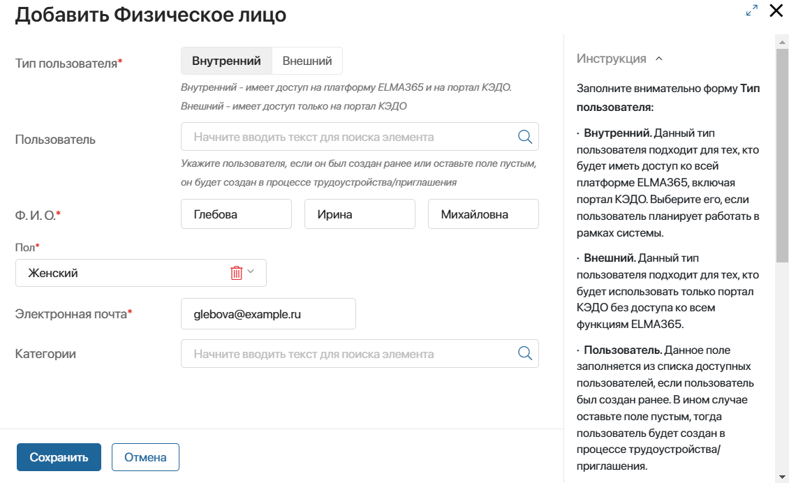
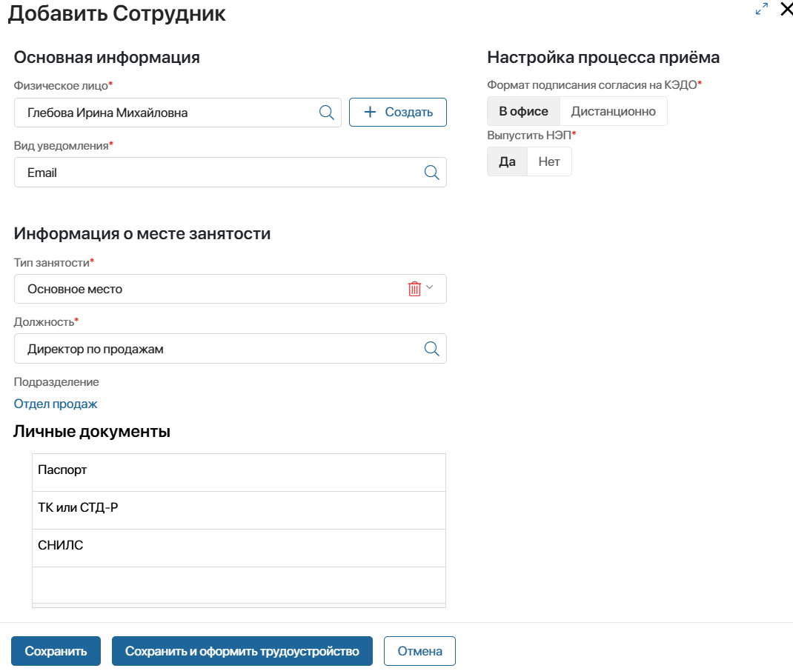

Чтобы трудоустроить в организацию кандидатов и предоставить им возможность принимать участие в кадровом электронном документообороте, необходимо создать базу сотрудников в ELMA365.
Перед тем как перейти к настройкам, рассмотрим принятые в ELMA365 КЭДО 3.0 термины, касающиеся базы сотрудников:
- Физическое лицо — сотрудник, кандидат на вакансию или иной человек, принимающий участие в кадровых процессах организации. Карточки создаются и хранятся в разделе КЭДО 3.0 > Физические лица;
- Сотрудник — физическое лицо, принятое на должность в штатном расписании организации и состоящее в трудовых отношениях с ней. С каждой должностью в компании связывается определённый сотрудник. Если одно физическое лицо занимает несколько должностей, для него создаётся такое же количество карточек сотрудника. Записи о сотрудниках добавляются и хранятся в разделе КЭДО 3.0 > Сотрудники;
- Портал КЭДО — личный кабинет сотрудника, из интерфейса которого он принимает участие в кадровых процессах компании: трудоустраивается, создаёт различные заявления, просматривает и подписывает кадровые документы и т. д.;
- Внутренний пользователь — сотрудник, который имеет доступ к личному кабинету на портале КЭДО, а также к разделам в интерфейсе ELMA365. К внутренним пользователям относятся сотрудники, ответственные за кадровые процессы: руководители компании, бухгалтеры, специалисты отдела кадров и т. д.;
- Внешний пользователь — сотрудник, который может работать с кадровыми документами только через Портал КЭДО.
Основные этапы внесения сотрудника в базу
Для каждого кандидата в ELMA365 должно присутствовать три записи: физического лица, сотрудника и внутреннего или внешнего пользователя.
Занесение кандидата в базу выполняется из разделов интерфейса ELMA365 в несколько этапов:
- Убедитесь, что в системе заполнено штатное расписание организации.
- Создайте карточку физического лица. При этом укажите, к какому типу пользователя относится физическое лицо: внутреннему или внешнему.
- Добавьте одну или несколько карточек сотрудника для физического лица, в зависимости от того, сколько должностей он будет занимать.
- Запустите процесс трудоустройства сотрудника.
- В ходе процесса на портале КЭДО сотрудник вносит персональные данные, загружает необходимые для трудоустройства документы, а также получает сертификат неквалифицированной электронной подписи. С его помощью он сможет подписывать кадровые документы.
- По завершении процесса в ELMA365 автоматически добавится карточка сотрудника:
- для внутреннего пользователя — в разделе Администрирование > Пользователи;
- для внешнего пользователя — в разделе Системные справочники > Внешние пользователи.
В этой статье рассмотрим, как выполнить предварительные шаги для запуска процесса трудоустройства и добавить запись о физическом лице и карточку сотрудника.
Создать карточку физического лица
Заполнение базы сотрудников следует начать с создания карточки физического лица:
- Перейдите в раздел КЭДО 3.0 > Физические лица и в правом верхнем углу страницы нажмите + Физическое лицо.
- Заполните данные в открывшемся окне:

- Тип пользователя* — выберите, какой уровень доступа предоставить сотруднику и каким образом он будет участвовать в кадровом документообороте:
- Внутренний — сотрудник сможет работать с разделами в интерфейсе ELMA365 и будет приглашён на Портал КЭДО. Например, к таким сотрудникам относятся руководители организации или бухгалтеры;
- Внешний — сотруднику предоставляется доступ только на Портал КЭДО, с которого он будет подавать заявки и выполнять задачи в ходе кадровых процессов.
- Пользователь — оставьте поле пустым, если сотрудник добавляется впервые. Если пользователь уже занесён в ELMA365, выберите его карточку из справочника:
- для внутреннего пользователя — из раздела Администрирование > Пользователи;
- для внешнего пользователя — из раздела Системные справочники > Внешние пользователи.
- Ф.И.О.* — укажите фамилию и имя сотрудника, отчество заполняется опционально. В дальнейшем сотрудник сможет внести его на портале КЭДО;
- Пол* — из списка выберите пол сотрудника;
- Электронная почта* — внесите адрес электронной почты кандидата, на которую ему придёт приглашение на Портал КЭДО после запуска процесса трудоустройства;
- Категории — выберите запись из справочника КЭДО 3.0 > Категории, если сотруднику нужно присвоить определённую льготную категорию: работник, достигший пенсионного возраста или совмещающий работу с получением образования и т. д.
- Сохраните карточку физического лица.
Создать карточку сотрудника
Следующий шаг — добавить для физического лица карточку сотрудника. Это нужно для трудоустройства работника на определённую должность. При этом для одного физического лица может быть создано несколько карточек сотрудника, согласно количеству должностей, которые он занимает в компании.
Для этого:
- Перейдите в раздел КЭДО 3.0 > Сотрудники и в правом верхнем углу страницы нажмите + Сотрудники.
- Заполните данные в открывшемся окне:

- Физическое лицо* — нажмите значок лупы и выберите созданную ранее запись из справочника. Если необходимо добавить новое физическое лицо, нажмите кнопку + Создать;
- Вид уведомлений* — выберите, каким образом сотрудник получит приглашение на Портал КЭДО с ссылкой для регистрации.
Доступные способы хранятся в справочнике КЭДО 3.0 > Виды уведомлений. При первичной настройке решений создаются виды SMS и Email. Чтобы пользователь получал оповещение администратор должен выполнить настройки: подключить корпоративную почту на уровне компании или SMS-провайдера;
- Тип занятости* — укажите, каким образом сотрудник трудоустраивается на указанную в его карточке должность:
- Основное место — сотрудник занимает только одну должность в организации;
- Внутреннее совместительство — сотрудник трудоустраивается на дополнительную должность, имея основное место работы в этом же юридическом лице;
- Внешнее совместительство — сотрудник имеет основное место работы в одном юридическом лице и трудоустраивается на дополнительную должность в другую организацию.
- Должность* — нажмите значок лупы и выберите позицию штатного расписания из справочника Должности ШР, на которую трудоустраивается кандидат. При этом в карточке автоматически заполняется поле Подразделение, значения которого определятся по указанной должности;
- Формат подписания согласия на КЭДО* — определите, как в процессе трудоустройства сотрудник предоставит оригиналы подписанных соглашений на кадровый электронный документооборот и электронное взаимодействие:
- В офисе — личное подписание документов в отделе кадров;
- Дистанционно — сотрудник распечатывает полученные на портале КЭДО документы, подписывает их и прикрепляет отсканированные копии к задаче. Оригиналы отправляются работодателю по почте.
- Выпустить НЭП* — отметьте Да, чтобы в процессе трудоустройства предоставить сотруднику сертификат неквалифицированной электронной подписи;
- Личные документы — в таблице указаны документы, которые сотрудник должен предоставить в процессе трудоустройства. По умолчанию выбраны: паспорт, трудовая книжка, СНИЛС. Вы можете добавить документ, нажав значок лупы в пустой строке таблице и выбрав запись из справочника КЭДО 3.0 > Виды личных документов. Для удаления документа нажмите значок корзины рядом с его названием.
Администратор системы может настроить список документов, которые отображаются на форме добавления сотрудника по умолчанию. Для этого в справочнике Виды личных документов он отмечает документ как необходимый для трудоустройства.
- Сохраните карточку сотрудника. Чтобы сразу пригласить пользователя на Портал КЭДО и запустить процесс трудоустройства нажмите Сохранить и оформить трудоустройство.